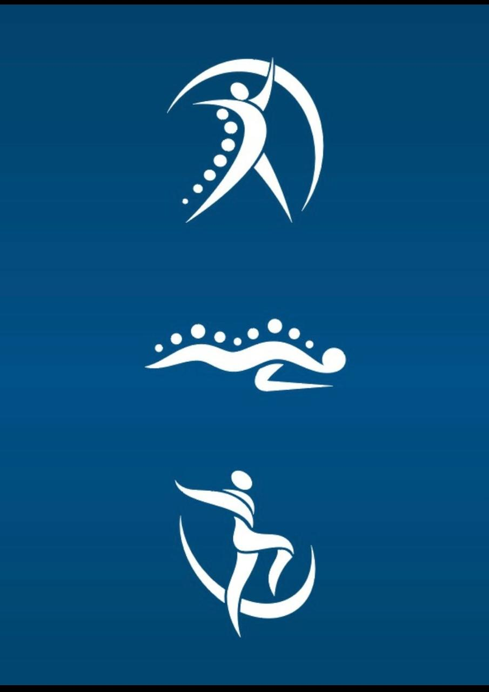
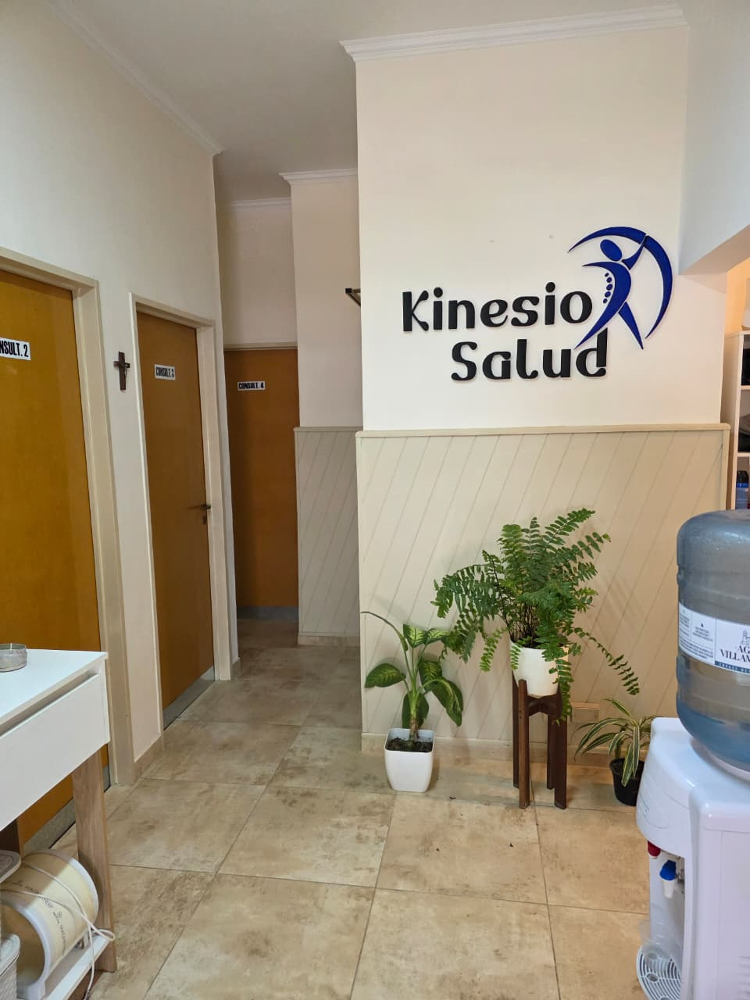
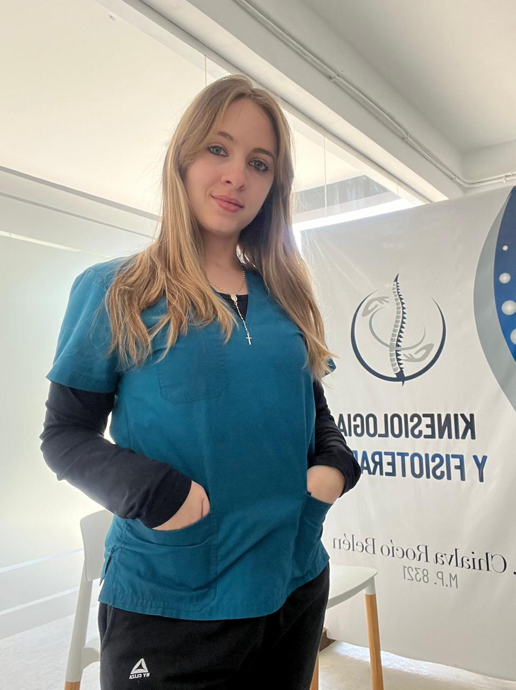
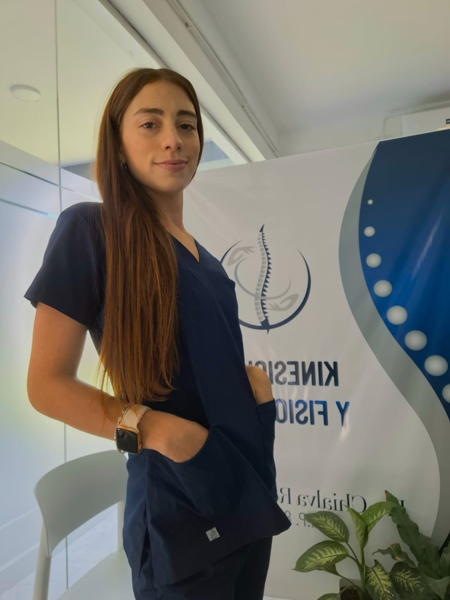

Nuestro espacio
Kinesio.Saludd es un espacio dedicado a brindar atención profesional, clara y cercana. La página busca mostrar la información principal del consultorio de una manera simple para que el paciente pueda recorrerla sin dificultad.

Kinesio.SaluddCentro de kinesiología y fisioterapia ubicado en Río Primero, pensado para acompañar procesos de recuperación, prevención y bienestar físico.
Solicitar consulta
Kinesio.Saludd es un espacio dedicado a brindar atención profesional, clara y cercana. La página busca mostrar la información principal del consultorio de una manera simple para que el paciente pueda recorrerla sin dificultad.
El objetivo de la web es presentar el consultorio, mostrar los servicios disponibles y facilitar el contacto mediante una navegación ordenada entre las páginas de inicio, servicios y contacto.
Equipo profesional
El sitio también presenta a las profesionales que forman parte del consultorio, incorporando imágenes y una breve descripción de su formación.

Licenciada en Kinesiología y Fisioterapia. Especializada en Osteopatía.

Licenciada en Kinesiología y Fisioterapia. Especialista en Deportes y Terapias Manuales.